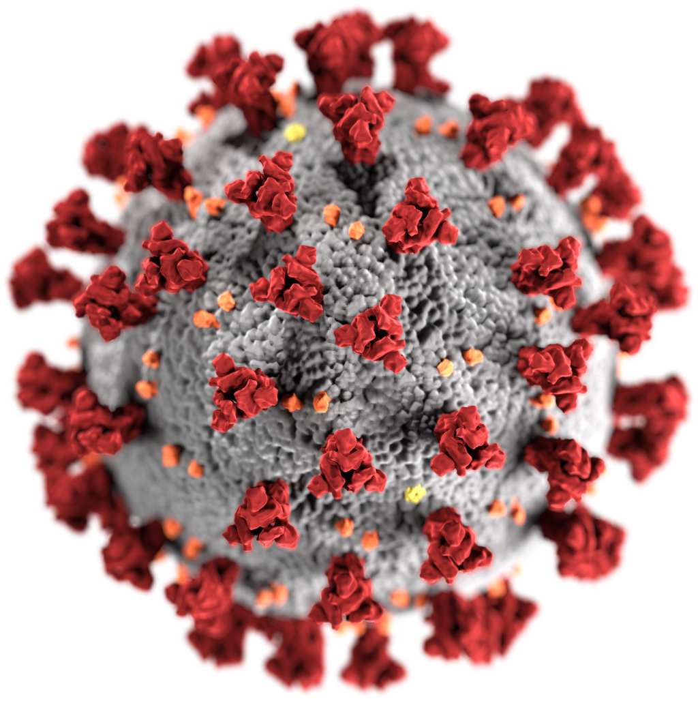

Virový obal COVID-19
SARS-CoV-2 (COVID-19)
Je infekční onemocnění, které je způsobeno novým koronavirem SARS-CoV-2 (dříve označovaným jako 2019-nCoV), jenž se začal šířit v prosinci 2019 z Číny z města Wu-chan. Označení COVID-19 bylo Světovou zdravotnickou organizací prohlášeno za oficiální dne 11. února 2020. Ke dni 31. března 2020 je na celém světě 787 631 potvrzených případů, z toho 37 840 úmrtí a 166 276 zotavení. COVID - 19 se již rozšířil do 178 států a teritorií.
Prevence
Prevence před nákazou koronavirem SARS-CoV-2 je stejná jako u jiných virových onemocnění, například chřipky: zpřísnění hygienických pravidel, např. mytí rukou, vyhýbání se osobám s respiračními potížemi, vyhýbání se koncentrovanému shromáždění osob či posilování imunitního systému. Pokud jde o přežívání viru na površích, virus má poločas přežívání (doba, po které ho zůstane poloviční množství), u různých materiálů je různý, ale je v řádu hodin. Hodnoty jsou podobné jako u SARS-CoV-1, takže rozsáhlost pandemie COVID-19 je způsobena jinými faktory. Dle posledních studií se pro dezinfekci zasažených oblastí hodí lépe ozon, který ničí SARS-CoV-2 lépe než chlor